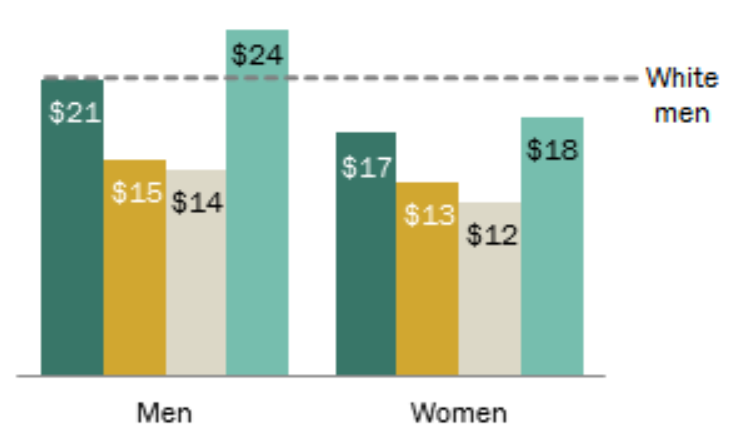

Social Media Hurts Teens
The Pandemic Made It Worse
In the Education Week article "Social Media is Tearing Us Apart" by Alyson Klein, middle and high school students answer a survey about how much they use social media and what that is doing to them. This article is from back in January 2020, so before the pandemic.
I bet the pandemic has made this worse for Lyceum students. To find out, I made a survey as well.
Read more »Live Action Racist TV

Have you noticed how many new live action shows push racist stereotypes down our throats? And then we’re left to vomit them out and get rid of them.This makes me angry and I hope it does the same to you.
The latest example is CW’s in making Powerpuff Girls live action. The Powerpuff Girls are three sisters who were made from "sugar, spice, and everything nice", they fight crime together and lose their childhood to it. It was once a good TV show, but now CW has apparently taken a liking to ruining childhood favorites with racism.
Lia's Anime Art
Captions Contest
Lianexis started drawing anime art a few weeks ago, using her phone. She doesn't post it, but she does share it with friends. Everyone agrees that it is very, very good. So we made a captions contest to see what students thought her drawings were about.
Las Ventajas del Idioma:
Idioma español en la escuela
Para mi el espanol es útil porque me puedo expresar mejor y entender mejor mis tareas. Los estudiantes hispanohablantes tienen la desventajas ante los estudiantes de habla inglés ya que no pueden competir con el conocimiento de dicho idioma.
Al contrario, cuando utilizan su propio idioma, que es el Español, pueden usar sus propias palabras para explicar algo en sus clases.
Top Quarantine Feelings:
Lonely and Crazy!
At Lyceum Prep currently many students agree that the pandemic has damaged our mental health. In my survey, most complained of loneliness and isolation. “I've been feeling lonely like I lost all my friends and stuff like that", wrote Mino. "I just felt like I had no one, really sad, upsetting, and depressed.” Many people at Lyceum feel the same way, so please don’t feel alone if you feel this way.

Haiku by Evangeline
The bright flowers bloom
The rain stomping on the ground
The sun starts to come.

Chess Versus Go
I like to play chess against the computer, although I never win. I use Cool Math Games to play. I wanted to write an article to see if I could get some other students into chess and then try to beat them.
Mr. M. and I were talking about what should go in the article, and I invited him to play me!
A New Space Race
Guess who the two richest people are? Jeff Bezos ($189 billion) and Elon Musk ($155 billion).
How much is $150 billion? That's a hundred and fifty thousand million dollar bills.
What do Jeff Bezos and Elon Musk do with all their money? Make space rockets.
Racism in 3 US Industries:
Education, Justice, Beauty
There are always gaps in the things we are taught. Schools sugar-coat our country's racist history (Education Week). The Tulsa Race Massacre was only added to Oklahoma's curriculum in 2020, and just made a national memorial by President Joe Biden on June 1st, on its 100th anniversary.
While Oklahoma's governor has outlawed teaching critical race theory at any public school (ABC News), we can still learn about racism in Massachusetts, historical and current. Let's get started.
Pandemic Changes in Music and Emotion
Many students’ musical tastes have changed while being remote. Has yours changed? I notice that as I wait for my favorite artists to drop new music and albums, I find new names interesting, and sometimes I am interested in old music from over 7 years ago.
Sometimes musical choices relate to emotions. When I feel sad I may listen to depressing music; when happy I may listen to pop or rap. I imagine there is most likely music for every feeling. If my musical tastes have changed over quarantine, that might be connected to other changes in how I feel generally, and how I'm doing overall. My survey gave other students a chance to ask themselves that question.

Do you "get" this Romeo & Juliet meme?
Memeo, O Memeo...
Students from Ms. Easton's Creative Writing class had a fun, stress-relieving assignment: find something from the study of Romeo and Juliet you relate to and make a meme of it using Meme Generator. They are printed and up in the hallway ... maybe you've seen them?
Two things make a good meme: whether you understand what it means, and how well the meme (and the joke behind it) fits that part of the Romeo & Juliet experience. Here are four of our favorite R&J memes.
Wage Gap Math
Do you believe everyone gets paid the same amount, no matter what their skin color or gender? Unfortunately till this day that answer is no. Women and people of color get paid less for doing the same work than white men get paid.
When this country began, most people of color in the South did not get paid at all because they were slaves. When slavery ended, some people thought that country would now be fair. Even though “white” people didn’t like “colored” (black) people and did not want to live close to them and engage with them, the idea was to be "separate but equal".
But "equal" never happened. “Black” people get paid less, and women get paid less even when they are more skilled than men.